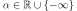

HaarWaveletFactory¶
(Source code, png, hires.png, pdf)
{kind=link}
{kind=link}
-
class
HaarWaveletFactory(*args)¶ Haar wavelet function factory.
Generates the Haar basis defined as follows:
where , , .
Methods
build(order)Build the  -th order orthogonal univariate function.
-th order orthogonal univariate function.getClassName()Accessor to the object’s name. getId()Accessor to the object’s id. getMeasure()Accessor to the associated probability measure. getName()Accessor to the object’s name. getShadowedId()Accessor to the object’s shadowed id. getVisibility()Accessor to the object’s visibility state. hasName()Test if the object is named. hasVisibleName()Test if the object has a distinguishable name. setName(name)Accessor to the object’s name. setShadowedId(id)Accessor to the object’s shadowed id. setVisibility(visible)Accessor to the object’s visibility state. -
__init__(*args)¶ x.__init__(…) initializes x; see help(type(x)) for signature
-
build(order)¶ Build the
-th order orthogonal univariate function.Parameters: n : int,
Function order.
Returns: function :
UniVariateFunctionRequested orthogonal univariate function.
-
getClassName()¶ Accessor to the object’s name.
Returns: class_name : str
The object class name (object.__class__.__name__).
-
getId()¶ Accessor to the object’s id.
Returns: id : int
Internal unique identifier.
-
getMeasure()¶ Accessor to the associated probability measure.
Returns: measure :
DistributionThe associated probability measure (according to which the functions are orthogonal).
Notes
Two functions P and Q are orthogonal with respect to the probability measure
 if and only if their scalar product:
if and only if their scalar product:
where  and
 .
.
-
getName()¶ Accessor to the object’s name.
Returns: name : str
The name of the object.
-
getShadowedId()¶ Accessor to the object’s shadowed id.
Returns: id : int
Internal unique identifier.
-
getVisibility()¶ Accessor to the object’s visibility state.
Returns: visible : bool
Visibility flag.
-
hasName()¶ Test if the object is named.
Returns: hasName : bool
True if the name is not empty.
-
hasVisibleName()¶ Test if the object has a distinguishable name.
Returns: hasVisibleName : bool
True if the name is not empty and not the default one.
-
setName(name)¶ Accessor to the object’s name.
Parameters: name : str
The name of the object.
-
setShadowedId(id)¶ Accessor to the object’s shadowed id.
Parameters: id : int
Internal unique identifier.
-
setVisibility(visible)¶ Accessor to the object’s visibility state.
Parameters: visible : bool
Visibility flag.
-